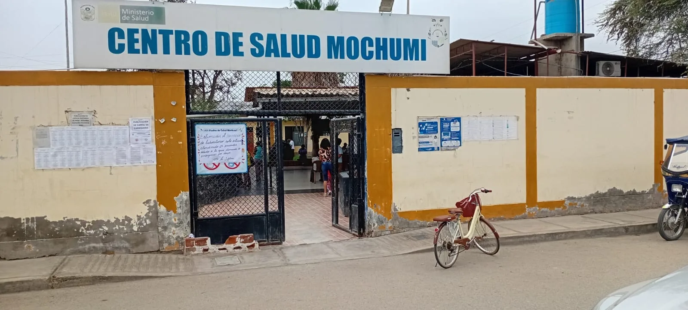
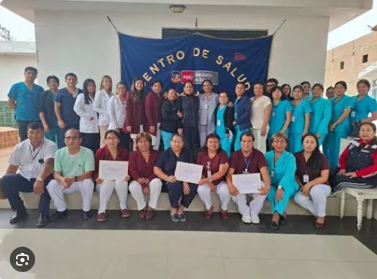
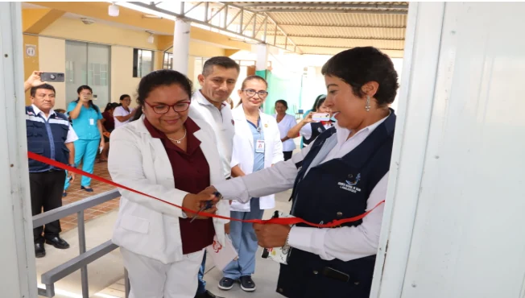
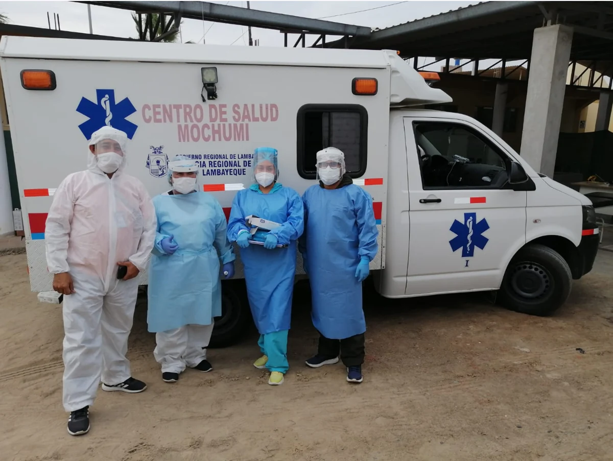

Salud Materno Infantil
Protegemos la salud de las madres y los niños mediante el control prenatal, el tamizaje de anemia y el esquema completo de vacunación.
Conocer serviciosBrindamos atención médica integral, preventiva y especializada con cercanía humana y tecnología digital para cada familia de nuestro distrito y sus anexos rurales.
Encuentra orientación directa sobre nuestros principales servicios asistenciales y canales digitales.
Medicina General, Obstetricia, Enfermería, CRED, Odontología e Inmunizaciones.
Explorar servicios →Accede a teleconsultas con médicos especialistas sin salir de Mochumí.
Cómo acceder →Consulta el estado de tu afiliación SIS, acceso a SISGEDO y Libro de Reclamaciones.
Ir a trámites →Articulación con los puestos de salud de Maravillas, Paredones y Punto Cuatro.
Ver cobertura →
El Centro de Salud de Mochumí brinda atención integral, preventiva y asistencial, promoviendo el bienestar de las familias de nuestro distrito y sus anexos rurales.
Nuestro compromiso es ofrecer servicios de salud con calidez humana, equidad e innovación, fortaleciendo el vínculo con nuestra comunidad.
Promovemos el bienestar, la prevención y el desarrollo de nuestra comunidad mediante una atención oportuna y humana.
Protegemos la salud de las madres y los niños mediante el control prenatal, el tamizaje de anemia y el esquema completo de vacunación.
Conocer serviciosPromovemos la prevención mediante el monitoreo ambiental, el tamizaje de laboratorio y la orientación nutricional para proteger a nuestra comunidad.
Más informaciónProyecto CUI 2609511 por S/ 21 millones, bajo la modalidad de Obras por Impuestos, para la ampliación del Centro Materno Infantil.
Ver proyectoCartera de servicios aprobada mediante la RDE N.° 089-2024-GR.LAMB/GERESA-DESIP.
Conoce las acciones y avances en beneficio de nuestra comunidad.

GERESA Lambayeque aprobó el plan de trabajo de lactancia materna para la certificación del Centro de Salud de Mochumí.
Leer publicación
La inauguración del establecimiento de salud de Maravillas fortalece la atención primaria en el distrito de Mochumí.
Leer publicación
GERESA Lambayeque implementó módulos de atención para emergencias y desastres en diversos establecimientos, incluyendo Mochumí.
Leer publicaciónFuente: Gerencia Regional de Salud Lambayeque — Gob.pe